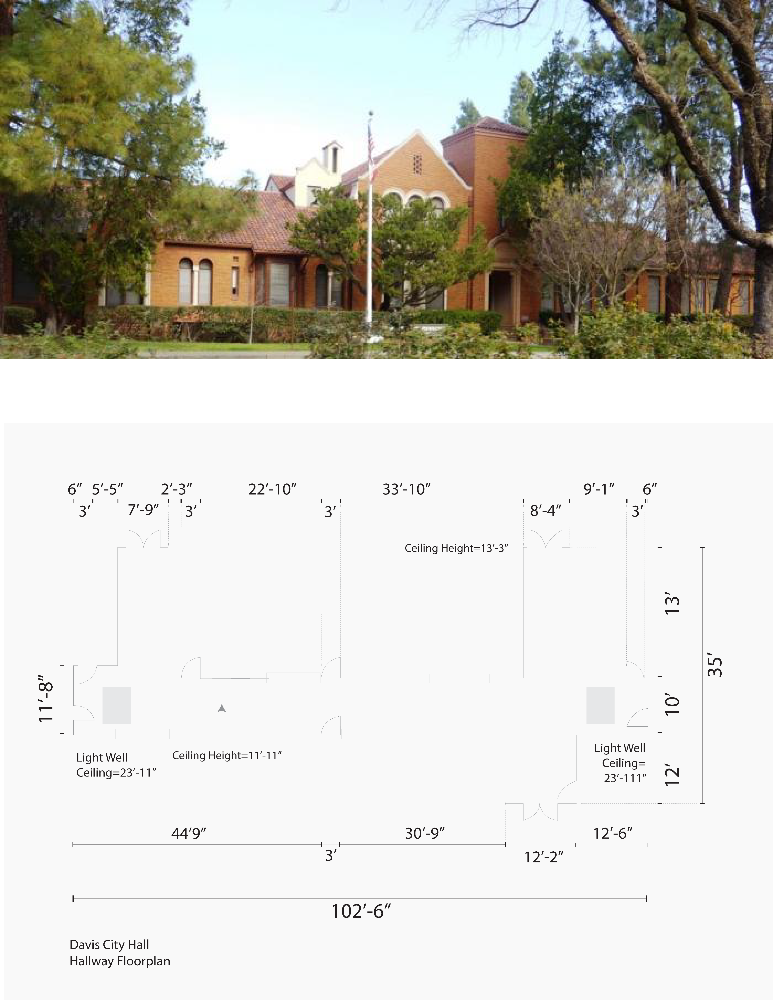
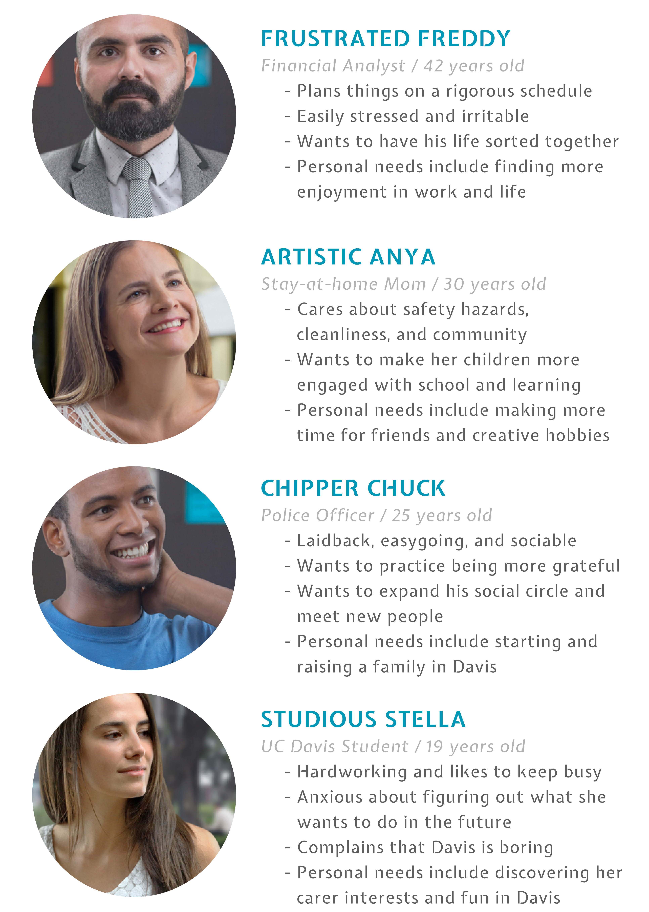

While the city of Davis is unique and rich with history, it is little known beyond being a college town. Even Davis City Hall, which has stood at the heart of downtown since 1944, has a vast amount of resources yet to be recognized by many citizens. I partnered with Davis City Hall to redesign an interpretive sign system for their interior first floor that would visually tell stories about the values and uniqueness of the city.
For this project, I collaborated with exhibition designer Chantel Oah. We focused our scope on the main hallway of Davis City Hall with the goal of beautifying that space with a creative design solution that would reflect the vision and history of Davis. My roles included conceptualizing, strategizing, and designing the space and the overall creative direction. Oah's role included materials, logistics, and copywriting for our presentation proposal.
-
Problem
The current hallway of Davis City Hall, as it stands, has a multitude of problems:
- Cluttered space. The walls display a disorganized array of visuals, ranging from local elementary school projects to flyers warning about sexual harrassment. There is no visual hierarchy. They all scream for your attention, and get lost in the process.
- Outdated decor. The building used to be a high school still retains the 80s look, with purple and beige colors, dull lighting, and cross-stitch pattern carpeting. It greatly needs a modern update.
- Excessive information. There is an abundance of information on the walls that nobody will stop to read. Not only is it a headache to look at, it also lacks the cohesiveness of portraying the city of Davis.
- 
- 
-
Davis Personas
To create a space for the people, we first had to know the needs of the people. I rifled through the Davis City Hall database to gauge common occupations and reasoning for crossing the corridor, then surveyed frequent Davis visitors to generate four representative personalities.
There are a few different reasons why a person may visit Davis City Hall, but their general attitude share some common traits:
- They're frustrated. Most people aren't at the city hall for leisure. It's seen as more of a sterile workplace environment.
- They're busy. Whether it's paying a bill or rushing to a conference, people are usually in a hurry to be somewhere else when they're crossing the corridor. They don't have the time to see something even busier.
- They're bored. A common complaint amoung younger residents is that "there's nothing to do in Davis", indicating that community events are often unheard of.
-
What is Davis?
How can someone learn about what makes Davis the way it is, and more importantly, why should they be proud of their city? My research tackled this question by analyzing the demogaphics of Davis as well as the type of community events that city hall or other members organize. I found a rich range of age groups that each have their own niche events, ranging from the annual plant swaps for the elderly, to farmer's markets for the adults, to agriculture classes for college students, and to camp programs and craft fairs for children.
These events reflect more than just what there is to do in Davis - they show the core values of the city. Ultimately, I boiled these values down to four components:
- Sustainability
- Community
- Diversity
- Education
-

The Battle Plan
Our scope focused on the corridor that stretched throughout the first floor of the city hall in which a single composition would take place upon the walls. The large-scale graphic mural would act as a visual narrative that replaces the excessive and disorganized display of information. The use of a vibrant color palette was important in capturing attention and revitalizing the energetic attitude towards Davis.
This mural condenses the information into an artistic blend of photos, text, and graphic effects that portray the essence of Davis. Photos are taken from real events with actual faces from the community to achieve genuine authenticity. Polygon shapes, as well as the text, protrude from the wall to add dimensionality and allow visitors to touch and interact with the exhibit.
After all, the journey down this corridor is a long one - we believe it should be worth it.